Chapter 10 Observational Studies, Selection Bias, and Nonparametric Identification of Causal Effects
Cochran, (1965) summarized two common characteristics of observational studies:
- 1.
the objective is to elucidate cause-and-effect relationships;
- 2.
it is not feasible to use controlled experimentation.
The first characteristic is identical to that of randomized experiments discussed in Part II of this book, but the second differs fundamentally from randomized experiments.
Dorn, (1953) suggested that the planner of an observational study should always ask the following question:
How would the study be conducted if it were possible to do it by controlled experimentation?
It is always helpful to follow Dorn, (1953)’s suggestion because the potential outcomes framework has an intrinsic link to an experiment, either a real experiment or a thought experiment. Part III of this book will discuss causal inference with observational studies. It will clarify the fundamental differences between observational studies and randomized experiments. Nevertheless, many ideas of causal inference with observational studies are deeply connected to those with randomized experiments.
53 Motivating Examples
Example 10.1 (job training program)
LaLonde, (1986) was interested in the causal effect of a job training program on earnings. He compared the results based on a randomized experiment to the results based on observational studies. We have used the experimental data before, which is the lalonde dataset in the Matching package. We have also used an observational counterpart cps1re74.csv in Chapter 2.1 and Problem 1.4. LaLonde, (1986) found that many traditional statistical or econometric methods for observational studies gave quite different estimates compared with the estimates based on the experimental data. Dehejia and Wahba, (1999) re-analyzed the data using methods motivated by causal inference, and found that those methods can recover the experimental gold standard well. Since then, this has become a canonical example in causal inference with observational studies.
Example 10.2 (smoking and homocysteine)
Bazzano et al., (2003) compared the homocysteine27 levels in daily smokers and non-smokers based on the data from the National Health and Nutrition Examination Survey (NHANES) 2005–2006. Rosenbaum, (2018) documented the data as homocyst in the package senstrat. The dataset has the following important covariates:
| female | 1=female, 0=male |
| age3 | three age categories: 20–39, 40–50,  60 60 |
| ed3 | three education categories: 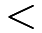 high school, high school, some college |
| bmi3 | three BMI categories: 30, 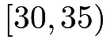 , 35 |
| pov2 | TRUE=income at least twice the poverty level, FALSE otherwise |
Example 10.3 (school meal program and body mass index)
Chan et al., (2016) used a subsample of the data from NHANES 2007–2008 to study whether participation in school meal programs led to an increase in BMI for school children. They documented the data as nhanes_bmi in the package ATE. The dataset has the following important covariates:
| age | Age |
| ChildSex | Sex (1: male, 0: female) |
| black | Race (1: black, 0: otherwise) |
| mexam | Race (1: Hispanic: 0 otherwise) |
| pir200_plus | Family above 200% of the federal poverty level |
| WIC | Participation in the special supplemental nutrition program |
| Food_Stamp | Participation in food stamp program |
| fsdchbi | Childhood food security |
| AnyIns | Any insurance |
| RefSex | Sex of the adult respondent (1: male, 0: female) |
| RefAge | Age of the adult respondent |
54 Causal effects and selection bias under the potential outcomes framework
For unit 
 , we have pretreatment covariates
, we have pretreatment covariates  , a binary treatment indicator
, a binary treatment indicator  , and an observed outcome
, and an observed outcome  with two potential outcomes
with two potential outcomes  and
and  under the treatment and control, respectively. For simplicity, we assume
under the treatment and control, respectively. For simplicity, we assume
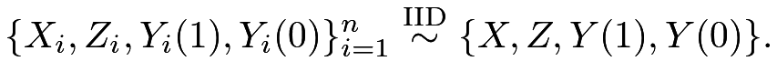 |
So we can drop the subscript for quantities of this population.
The causal effects of interest are the average causal effect
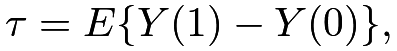 |
the average causal effect on the treated units
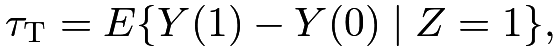 |
and the average causal effect on the control units:
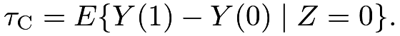 |
By the linearity of the expectation, we have
 |
 |
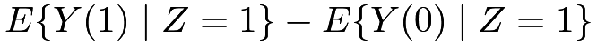 |
||
|
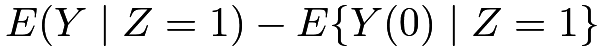 |
and
 |
|
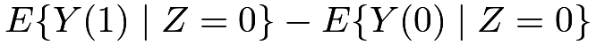 |
||
|
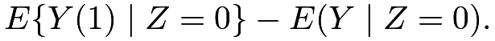 |
In the above two formulas of  and
and  , the quantities
, the quantities  and
and
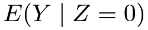
are directly estimable from the data, but the quantities and
and  are not. The latter two are counterfactuals because they are the means of the potential outcomes corresponding to the treatment level that is the opposite of the actual received treatment.
are not. The latter two are counterfactuals because they are the means of the potential outcomes corresponding to the treatment level that is the opposite of the actual received treatment.
The simple difference in means, also known as the prima facie28 causal effect,
 |
|
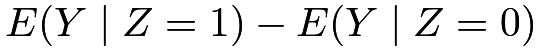 |
||
|
 |
is generally biased for the causal effects defined above. For example,
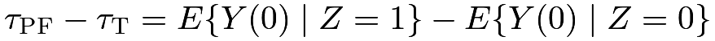 |
and
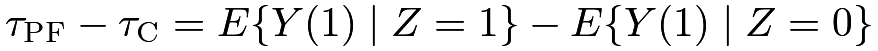 |
are not zero in general, and they quantify the selection bias. They measure the differences in the means of the potential outcomes across the treatment and control groups.
Why is randomization so important? Rubin, (1978) first used potential outcomes to quantify the benefit of randomization. We have used the fact in Chapter 9 that
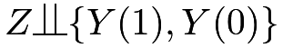 |
(46) |
in the CRE, which implies that the selection bias terms are both zero:
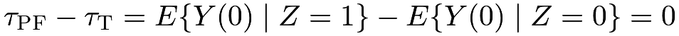 |
and
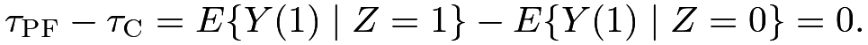 |
So under the CRE in (46), we have
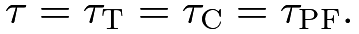 |
(47) |
From the above discussion, the fundamental benefit of randomization is to balance the distributions of the potential outcomes across the treatment and control groups. This is a much stronger guarantee than balancing the distributions of the observed covariates.
Without randomization, the selection bias terms can be arbitrarily large, especially for unbounded outcomes. This highlights the fundamental difficulty of causal inference with observational studies.
55 Sufficient conditions for nonparametric identification of causal effects
55.1 Identification
Causal inference with observational studies is challenging. It relies on strong assumptions. A strategy is to use the information from the pretreatment covariates and assume that conditioning on the observed covariates  , the selection bias terms are zero, that is,
, the selection bias terms are zero, that is,
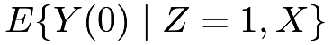 |
|
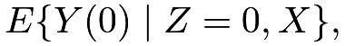 |
(48) | ||
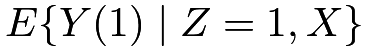 |
|
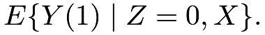 |
(49) |
The assumptions in (48) and (49) state that the differences in the means of the potential outcomes across the treatment and control groups are entirely due to the difference in the observed covariates. So given the same value of the covariates, the potential outcomes have the same means across the treatment and control groups. Mathematically, (48) and (49) ensure that the conditional versions of the effects in (47) are identical:
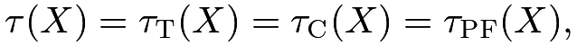 |
where
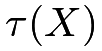 |
|
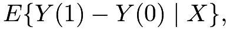 |
||
 |
|
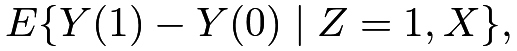 |
||
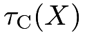 |
|
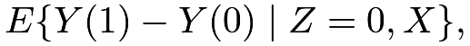 |
||
 |
|
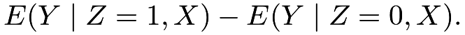 |
In particular,  is often called the conditional average causal effect (CATE).
is often called the conditional average causal effect (CATE).
A key result in this chapter is that the average causal effect  is nonparametrically identifiable under (48) and (49). The notion of nonparametrically identifiability does not appear frequently in classic statistics, but it is key to causal inference with observational studies. I first give an abstract definition below.
is nonparametrically identifiable under (48) and (49). The notion of nonparametrically identifiability does not appear frequently in classic statistics, but it is key to causal inference with observational studies. I first give an abstract definition below.
Definition 10.1 (identification)
A parameter  is identifiable if it can be written as a function of the distribution of the observed data under certain model assumptions.
A parameter is nonparametrically identifiable if it can be written as a function of the distribution of the observed data without any parametric model assumptions.
is identifiable if it can be written as a function of the distribution of the observed data under certain model assumptions.
A parameter is nonparametrically identifiable if it can be written as a function of the distribution of the observed data without any parametric model assumptions.
Definition 10.1 is too abstract at the moment. I will use more concrete examples in later chapters to illustrate its meaning. It is often neglected in classic statistics problems. For instance, the mean
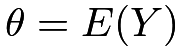
is nonparametrically identifiable if we have IID draws of’s; the Pearson correlation coefficient 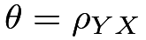
is nonparametrically identifiable if we have IID draws of the pairs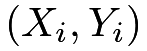
’s. In those examples, the parameters are nonparametrically identifiable automatically. However, Definition 10.1 is fundamental in causal inference with observational studies. In particular, the parameter of interest depends on some unobserved random variables, so it is unclear whether it is nonparametrically identifiable based on observed data. Under the assumptions in (48) and (49), it is nonparametrically identifiable, with details below.
depends on some unobserved random variables, so it is unclear whether it is nonparametrically identifiable based on observed data. Under the assumptions in (48) and (49), it is nonparametrically identifiable, with details below.
Because
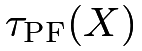
depends only on the observables, it is nonparametrically identified by definition. Moreover, (48) and (49) ensure that the three causal effects are the same as , so, 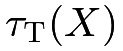
and are all nonparametrically identified. Consequently, the unconditional versions are also nonparametrically identified under (48) and (49) due to the law of total expectation:
are all nonparametrically identified. Consequently, the unconditional versions are also nonparametrically identified under (48) and (49) due to the law of total expectation:
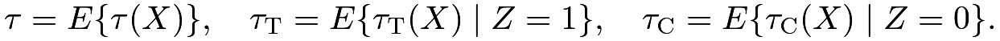 |
From now on, I will focus on unless stated otherwise (Chapter 13 will be an exception). The following theorem summarizes the identification formulas of .
Theorem 10.1
The formula (51) was formally established by Rosenbaum and Rubin, 1983b (), which is also called the g-formula by Robins (Hernán and Robins,, 2020, see).
With a discrete covariate, we can write the identification formula in Theorem 10.1 as
 |
|
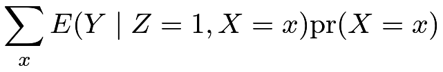 |
(53) | ||
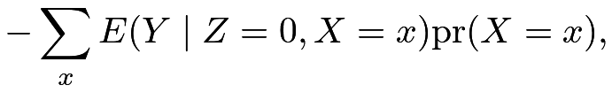 |
and also the simple difference in means as
|
|
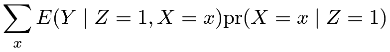 |
(54) | ||
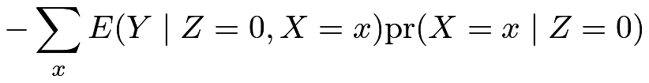 |
by the law of total probability. Comparing (53) and (54), we can see that although both formulas compare the conditional expectations
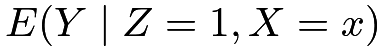
and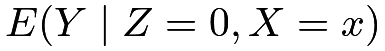
, they average over different distributions of the covariates. The causal parameter averages the conditional expectations over the common distribution of the covariates, but the difference in means 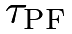
averages the conditional expectations over two different distributions of the covariates in the treated and control groups.Usually, we impose a stronger assumption.
Assumption 10.1 (ignorability)
We have
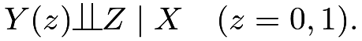 |
(55) |
Assumption 10.1 has many names:
- 1.
ignorability due to Rubin, (1978)29;
- 2.
unconfoundedness which is popular among epidemiologists;
- 3.
selection on observables which is popular among social scientists;
- 4.
conditional independence which is merely a description of the notation in the assumption.
Sometimes, we impose an even stronger assumption.
Assumption 10.2 (strong ignorability)
We have
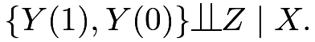 |
(56) |
Assumption 10.2 is called strong ignorability (Rubin,, 1978; Rosenbaum and Rubin, 1983b, ). If the parameter of interest is , then the stronger Assumptions 10.1 and 10.2 are just imposed for notational simplicity thanks to the conditional independence notation . They are not necessary for identifying . However, they can not be relaxed if the parameter of interest is the causal effects on other scales (for example, distribution, quantile, or some transformation of the outcome).
The strong ignorability assumption requires that the potential outcomes vector be independent of the treatment given the covariates, but the ignorability assumption only requires each potential outcome be independent of the treatment given covariates. The former is stronger than the latter. However, their difference is rather technical and of pure theoretical interests; see Problem 10.5. In most reasonable statistical models, they both hold; see Section 55.2 below. We will not distinguish them in this book and will simply use ignorability to refer to both.
55.2 Plausibility of the ignorability assumption
A fundamental problem of causal inference with observational studies is the plausibility of the ignorability assumption. The discussion in Chapter 55.1 may seem too mathematical in the sense that the ignorability assumption serves as a sufficient condition to ensure the nonparametric identification of the average causal effect. What is its scientific meaning? Intuitively, it rules out all unmeasured covariates that affect the treatment and outcome simultaneously. Those “common causes” of the treatment and outcome are called confounders. That is why the ignorability assumption is also called the unconfoundedness assumption. More transparently, we can interpret the ignorability assumption based on the outcome data-generating process. If
 |
|
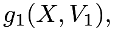 |
||
 |
|
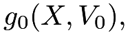 |
||
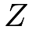 |
|
with , then both Assumptions 10.1 and 10.2 hold. In the above data-generating process, the “common causes” of the treatment and the outcome are all observed, and the remaining random components are independent. If the data-generating process changes to
|
|
|||
|
|
|||
|
with , then Assumptions 10.1 and 10.2 do not hold in general. The unmeasured “common cause”  induces dependence between the treatment and the potential outcomes even conditional on the observed covariates . If we do not have access to and analyze the data based only on , the final estimator will be biased for the causal parameter in general. This type of bias is called the omitted variable bias in econometrics; see Problem 16.2 in a later chapter.
induces dependence between the treatment and the potential outcomes even conditional on the observed covariates . If we do not have access to and analyze the data based only on , the final estimator will be biased for the causal parameter in general. This type of bias is called the omitted variable bias in econometrics; see Problem 16.2 in a later chapter.
The ignorability assumption can be reasonable if we observe a rich set of covariates that affect the treatment and the outcome simultaneously. I start with this assumption to discuss identification and estimation strategies in Part III of this book. However, it is fundamentally untestable. We may justify it based on the scientific background knowledge, but we are often not sure whether it holds or not. Parts IV and V of this book will discuss other strategies when the ignorability assumption is not plausible.
56 Two simple estimation strategies and their limitations
56.1 Stratification or standardization based on discrete covariates
If the covariate  is discrete, then ignorability (55) reads as
is discrete, then ignorability (55) reads as
which essentially assumes that the observational study is an SRE under the superpopulation framework in Chapter 9. Therefore, we can use the estimator
which is identical to the stratified or post-stratified estimator discussed in Chapter 5.
This method is still widely used in practice. Example 10.2 contains discrete covariates, and I relegate the analysis to
Problem 10.4. However, there are several obvious difficulties in implementing this method. First, it works well for the case with small  . For large , it is very likely that many strata have or , leading to the poorly defined
. For large , it is very likely that many strata have or , leading to the poorly defined ![\hat{\tau}_{[k]}](m/fe3e01b86cf8.png) ’s for those strata. This is related to the issue of overlap which will be discussed in Chapter 20 later. Second, it is not obvious how to apply this stratification method to multidimensional continuous or mixed covariates . A standard method is to create strata based on the initial covariates and then apply the stratification method. This may result in arbitrariness in the analysis.
’s for those strata. This is related to the issue of overlap which will be discussed in Chapter 20 later. Second, it is not obvious how to apply this stratification method to multidimensional continuous or mixed covariates . A standard method is to create strata based on the initial covariates and then apply the stratification method. This may result in arbitrariness in the analysis.
56.2 Outcome regression
The most commonly used method based on outcome regression is to run the OLS with an additive model of the observed outcome on the treatment indicator and covariates, which assumes
If the above linear model is correct, then we have
|
||||
|
||||
|
which implies that the causal effect is homogeneous with respect to the covariates. This, coupled with ignorability, implies that
Therefore, if ignorability holds and the outcome model is linear, then the average causal effect equals the coefficient of  . This is one of the most important applications of the linear model. However, the causal interpretation of the coefficient of is valid only under two strong assumptions: ignorability and the linear model.
. This is one of the most important applications of the linear model. However, the causal interpretation of the coefficient of is valid only under two strong assumptions: ignorability and the linear model.
We have discussed in Chapter 6, the above procedure is suboptimal even in CREs because it ignores the treatment effect heterogeneity induced by the covariates. If we assume
we have
|
||||
|
||||
|
which, coupled with ignorability, implies that
The estimator for is then , where  is the regression coefficient of and
is the regression coefficient of and  is the sample mean of . If we center the covariates to ensure
is the sample mean of . If we center the covariates to ensure  , then the estimator is simply the regression coefficient of . To simplify the procedure, we usually center the covariates at the beginning; also recall Lin, (2013)’s estimator introduced in Chapter 6. Rosenbaum and Rubin, 1983b () and Hirano and Imbens, (2001) discussed this estimator.
, then the estimator is simply the regression coefficient of . To simplify the procedure, we usually center the covariates at the beginning; also recall Lin, (2013)’s estimator introduced in Chapter 6. Rosenbaum and Rubin, 1983b () and Hirano and Imbens, (2001) discussed this estimator.
In general, we can use other more complex models to estimate the causal effects. For example, if we build two predictors  and
and  based on the treated and control data, respectively, then we have an estimator for the conditional average causal effect
based on the treated and control data, respectively, then we have an estimator for the conditional average causal effect
and an estimator for the average causal effect:
The estimator  above has the same form as the projective estimator discussed in Chapter 6. It is sometimes called the outcome regression estimator. The OLS-based estimators above are special cases. We can use the nonparametric bootstrap (see Chapter 30.F) to estimate the standard error of the outcome regression estimator.
above has the same form as the projective estimator discussed in Chapter 6. It is sometimes called the outcome regression estimator. The OLS-based estimators above are special cases. We can use the nonparametric bootstrap (see Chapter 30.F) to estimate the standard error of the outcome regression estimator.
I give another example for binary outcomes below.
Example 10.4 (outcome regression estimator for binary outcomes)
With a binary outcome, we may model  using a logistic model
using a logistic model
then based on the estimators of the coefficients , we have the following estimator for the average causal effect:
This estimator is not simply the coefficient of the treatment in the logistic model.30 It is a nonlinear function of all the coefficients as well as the empirical distribution of the covariates. In econometrics, this estimator is called the “average partial effect” or “average marginal effect” of the treatment in the logistic model. Many econometric software packages can report this estimator associated with the standard error. Similarly, we can also derive the corresponding estimator based on a fully interacted logistic model; see Problem 10.3.
The above predictors for the conditional means of the outcome can also be other machine learning tools. In particular,
Hill, (2011) championed the use of tree methods for estimating , and Wager and Athey, (2018) proposed to use them also for estimating . Wager and Athey, (2018) also combined the tree methods with the idea of the propensity score in the next chapter. Since then, the intersection of machine learning and causal inference has been an active research area (Hahn et al.,, 2020; Künzel et al.,, 2019, e.g.,).
The biggest problem with the above approach based on outcome regressions is its sensitivity to the specification of the outcome model. Problem 1.4 gave such an example. Depending on the incentive of empirical research and publications, people might report their favorable causal effects estimates after searching over a wide set of candidate models, without confessing this model searching process. This is a major source of  -hacking in causal inference. Problem 1.4 hinted at this issue. Leamer, (1978) criticized this approach in empirical research.
-hacking in causal inference. Problem 1.4 hinted at this issue. Leamer, (1978) criticized this approach in empirical research.
57 Homework Problems
10.1 A simple identity
Show that .
10.2 Nonparametric identification of other causal effects
Under ignorability, show that
- 1.
the distributional causal effect
is nonparametrically identifiable for all
 ;
; - 2.
the quantile causal effect
is nonparametrically identifiable for all , where is the th quantile of a random variable.
Remark:
In probability theory, is the cumulative distribution function and is the survival function of the potential outcome  .
The distributional causal effect compares the survival functions of the potential outcomes under treatment and control.
.
The distributional causal effect compares the survival functions of the potential outcomes under treatment and control.
The quantile causal effect compares the marginal quantiles of the potential outcomes, which is different from the quantile of the individual causal effect
In fact, is not identifiable in the sense that the marginal distributions and can not uniquely determine .
10.3 Outcome imputation estimator in the fully interacted logistic model
This problem extends Example 10.4.
Assume that a binary outcome follows a logistic model
What is the corresponding outcome regression estimator for the average causal effect?
10.4 Data analysis: stratification and regression
Use the dataset homocyst in the package senstrat. The outcome is homocysteine, the homocysteine level, and the treatment is z, where for a daily smoker and for a never smoker. Covariates are female, age3, ed3, bmi3, pov2 with detailed explanations in the package, and st is a stratum indicator, defined by all the combinations of the discrete covariates.
-
[(1)]
- 1.
How many strata have only treated or control units? What is the proportion of the units in these strata? Drop these strata and perform a stratified analysis of the observational study. Report the point estimator, variance estimator, and 95% confidence interval for the average causal effect.
- 2.
Run the OLS of the outcome on the treatment indicator and covariates without interactions. Report the coefficient of the treatment and the robust standard error.
Drop the strata with only treated or control units. Re-run the OLS and report the result.
- 3.
Apply Lin, (2013)’s estimator of the average causal effect. Report the coefficient of the treatment and the robust standard error.
If you do not drop the strata with only treated or control units, what will happen?
- 4.
Compare the results in the above three analyses. Which one is more credible?
10.5 Ignorability versus strong ignorability
Give an example such that the ignorability holds but the strong ignorability does not hold.
Remark: This is related to a classic probability problem of finding three random variables  such that
such that
10.6 Recommended reading
Cochran, (1965) is a classic reference on observational studies. It contains many useful insights but does not use the formal potential outcomes framework. Dylan Small founded a new journal called Observational Studies in 2015 (Small,, 2015) and reprinted an old article “Observational Studies” by W. G. Cochran as Cochran, (2015). Many leading researchers also made insightful comments on Cochran, (2015).
脚注
27. Homocysteine is a type of amino acid. A high level of homocysteine in the blood is regarded as a marker of cardiovascular disease.
28. It is a Latin phrase, which means “based on the first impression” or “accepted as correct until proved otherwise.” Holland, (1986) used this phrase.
29. The reason for using this name is unclear based on the discussion in this book. In fact, it is from the Bayesian perspective of causal inference. It is beyond the scope of this book.
30. If the logistic outcome model is correct, then estimates the conditional odds ratio of the treatment on the outcome given covariates, which does not equal .
Freedman, 2008c () gave a warning of using the logistic regression coefficient to estimate in CREs.
See Chapter 31 for more details of the logistic regression.